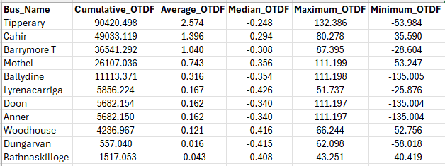
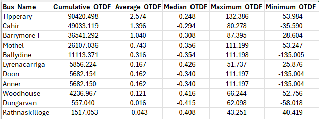

Hourly Timeseries Simulation#
Transmission planners increasingly require accurate hourly simulations to assess the operational impact of integrating new renewable generation or network reinforcements. While the static load flow cases are useful, there is a need within the industry for more depth in order to understand how new generators or network reinforcements impact the system during normal operation. Unlike traditional tools (e.g., PLEXOS, GAMS, PSSE, TARA), this Python-based solution using PandaPower significantly reduces cost and analysis time while maintaining accuracy.
In light of the recent decision on Large Energy User connection, there will be a push for Eirgrid to create a network capacity tool similar to what has been created for the distribution network by ESB. It may not be feasible to have a new transmission network capacity tool supported by data from quarterly simulations using PLEXOS. Instead, this pandapower based tool is a capable alternative.
Method#
The first stage in the timeseries simulation part of this tool consists of creating a balanced power system model for each hour. The model is given a set of hourly values representing demand factor of peak, wind capacity factor and solar capacity factor. Each hourly simulation is conducted by creating a balanced load-generation model, dispatching generation units according to EirGrid’s priority dispatch rules, and ensuring network constraints are observed.
This leaves room for edits as needed by the user, but keeps the focus on hourly load flow and realistic system dispatch. If the user would like specific battery storage projects with duration of 8 hours and others with 4 hour duration, they are able to make changes to reflect any unique disptach sensitivity. Currently the script operates dispatching all battery storage uniformly, charging when renewable generation is high and discharging when renewables are low. This is another area that can be modified, if specific projects seek to dispatch based on local generation/demand rather than central system-wide dispatch.
A balanced and converged network model is created for each hour at a rate of roughly 1463 hours (~2 months) in under 25 minutes using standard AC newton raphson powerflow solutions.
After the dispatch balancing is completed for each network model, the nodal analysis begins. Contingency analysis is completed for each hour, identifying the worst case contingency for each branch in the system greater or equal to 110kV. For each branch that experiences a worst case contingency greater than a user-defined “overload threshold”, shift factors are gathered and aggregated according to each bus. In doing this, the user can determine which nodes have a greater contribution to all worst case overloads for each hour in the simulation. There are two functional ways to complete this, either by AC powerflow for both the intact system and AC contingency analysis, or AC power flow on the intact system with DC LODF approximation for the contingency analysis. The latter being the most time efficient, capable of processing 2 months of hourly data in 42 minutes.
Output#

import sys
import pandapower as pp
print("Python executable:", sys.executable)
print("pandapower version:", pp.__version__)
Python executable: /home/codespace/.cache/pypoetry/virtualenvs/roi-power-flow-sample-aukJIi7B-py3.12/bin/python
pandapower version: 3.0.0
import sys
print("Executable:", sys.executable)
print("sys.path:")
for p in sys.path:
print(" ", p)
import pandapower as pp
print("pandapower version:", pp.__version__)
Executable: /home/codespace/.cache/pypoetry/virtualenvs/roi-power-flow-sample-aukJIi7B-py3.12/bin/python
sys.path:
/usr/local/python/3.12.1/lib/python312.zip
/usr/local/python/3.12.1/lib/python3.12
/usr/local/python/3.12.1/lib/python3.12/lib-dynload
/home/codespace/.cache/pypoetry/virtualenvs/roi-power-flow-sample-aukJIi7B-py3.12/lib/python3.12/site-packages
pandapower version: 3.0.0
import numpy as np
import pandas as pd
import pandapower as pp
import plotly.graph_objects as go
import plotly.io as pio
from IPython.display import HTML, display
# Optional: Uncomment to disable numba warnings (or install numba in your poetry environment)
# pp.options.numba = False
PF_SETTINGS = {
"algorithm": "nr",
"max_iteration": 100,
"tolerance_mva": 5e-3,
"init": "dc",
"enforce_q_lims": True,
"calculate_voltage_angles": True,
"logging": False,
"voltage_depend_loads": False,
"v_debug": True
}
# =============================================================================
# 1. Load or Create the pandapower Network
# =============================================================================
try:
net = pp.from_pickle("adjusted_network_1162.p")
print("Loaded adjusted_network_1162.p")
except Exception as e:
print("Could not load 'adjusted_network_1162.p'. Creating a demo network. Error:", e)
net = pp.create_empty_network()
b1 = pp.create_bus(net, vn_kv=110, name="Bus A")
b2 = pp.create_bus(net, vn_kv=110, name="Bus B")
b3 = pp.create_bus(net, vn_kv=110, name="Bus C")
pp.create_line(net, from_bus=b1, to_bus=b2, length_km=10, std_type="149-AL1/24-ST1A 110.0")
pp.create_line(net, from_bus=b2, to_bus=b3, length_km=15, std_type="149-AL1/24-ST1A 110.0")
#net.bus["in_service"] = True
#net.line["in_service"] = True
pp.runpp(net, **PF_SETTINGS)
print("Load flow complete.")
# =============================================================================
# 2. Bus Filtering
# =============================================================================
if "geodata" in net.bus.columns:
filtered_buses = net.bus[
(net.bus["vn_kv"] >= 110) &
(net.bus["in_service"] == True) &
(net.bus["x1"] > 0) &
(net.bus["y1"] > 0)
].copy()
filtered_buses["x1"] = filtered_buses["x1"]
filtered_buses["y1"] = filtered_buses["y1"]
else:
filtered_buses = net.bus[(net.bus["vn_kv"] >= 110) & (net.bus["in_service"] == True)].copy()
np.random.seed(42)
filtered_buses["x1"] = np.random.uniform(0, 100, size=len(filtered_buses))
filtered_buses["y1"] = np.random.uniform(0, 100, size=len(filtered_buses))
# Create a DataFrame similar to the original "relevant_bus"
relevant_bus = pd.DataFrame({
"index": filtered_buses.index,
"x1": filtered_buses["x1"],
"y1": filtered_buses["y1"],
"bus_names": filtered_buses["bus_names"]
})
bus_ids = relevant_bus["index"].tolist()
# =============================================================================
# 3. Line Filtering
# =============================================================================
filtered_lines = net.line[net.line["in_service"] == True].copy()
filtered_lines = filtered_lines[
filtered_lines["from_bus"].isin(bus_ids) &
filtered_lines["to_bus"].isin(bus_ids)
]
results = filtered_lines.copy()
results["loading_percent"] = net.res_line["loading_percent"]
results["p_from_mw"] = net.res_line["p_from_mw"]
results["name"] = results["name"].fillna("Unnamed Line")
# =============================================================================
# 4. Load Global Contingency Aggregator Data and Build Lookup
# =============================================================================
global_contingency_df = pd.read_csv("global_contingency_aggregator_June_Sept.csv")
def normalize_name(name):
return " ".join(str(name).split()).strip().lower()
cont_map = {}
for i, row_c in global_contingency_df.iterrows():
bname = normalize_name(row_c["Branch_Name"])
med_post_flow = row_c["Median_Post_Contingency_Flow_Percent"]
max_post_flow = row_c["Max_Post_Contingency_Flow_Percent"]
worst_outage = row_c["Worst_Case_Outage_For_Max"]
cont_map[bname] = (med_post_flow,max_post_flow, worst_outage)
default_cont_data = ("N/A", "No data", "No data")
# =============================================================================
# 5. Load Bus Aggregator Data from bus_lodf_aggregator_June_Sept.csv
# =============================================================================
try:
bus_lodf_df = pd.read_csv("bus_lodf_aggregator_June_Sept.csv")
def normalize_bus_name(name):
return " ".join(str(name).split()).lower()
bus_lodf_df["Normalized_Bus_Name"] = bus_lodf_df["Bus_Name"].apply(normalize_bus_name)
best_list = []
for idx, row in relevant_bus.iterrows():
bus_name = row["bus_names"]
norm_bus_name = normalize_bus_name(bus_name)
match = bus_lodf_df[bus_lodf_df["Normalized_Bus_Name"] == norm_bus_name]
if not match.empty:
cumulative_otdf = match.iloc[0]["Cumulative_OTDF"]
maximum_otdf = match.iloc[0]["Maximum_OTDF"]
minimum_otdf = match.iloc[0]["Minimum_OTDF"]
median_otdf = match.iloc[0]["Median_OTDF"]
worst_circuit_otdf = match.iloc[0]["Worst_Circuit"]
else:
cumulative_otdf = np.nan
maximum_otdf = np.nan
minimum_otdf = np.nan
median_otdf = np.nan
worst_circuit_otdf = np.nan
best_list.append({
"Bus_ID": row["index"],
"cumulative_otdf": cumulative_otdf,
"maximum_otdf": maximum_otdf,
"minimum_otdf": minimum_otdf,
"median_otdf": median_otdf,
"worst_circuit_otdf": worst_circuit_otdf,
})
best_results_full_discharge = pd.DataFrame(best_list)
print("Loaded bus-level aggregator data.")
except Exception as e:
print("Error loading bus_lodf_aggregator_June_Sept.csv, using dummy data:", e)
best_results_full_discharge = pd.DataFrame({
"Bus_ID": relevant_bus["index"],
"cumulative_otdf": 0,
"maximum_otdf": 0,
"minimum_otdf": 0,
"median_otdf": 0,
"worst_circuit_otdf": 0,
})
contingency_trigger = True
# =============================================================================
# 6. Plotting Function
# =============================================================================
def plot_network(relevant_bus, results, bus_ids, best_results_full_discharge, cont_map, contingency_trigger=True):
fig = go.Figure()
# Build nodal aggregated dictionary.
best_results_discharge_dict = {}
for i, row in best_results_full_discharge.iterrows():
bus_id = row["Bus_ID"]
best_results_discharge_dict[bus_id] = (row["cumulative_otdf"], row["maximum_otdf"], row["minimum_otdf"], row["median_otdf"], row["worst_circuit_otdf"])
# with NaN checks.
def get_line_color(val, min_val=0, max_val=100):
if pd.isna(val):
return "rgba(128,128,128,1)"
frac = np.interp(val, [min_val, max_val], [0, 1])
red = int(255 * frac)
blue = int(255 * (1 - frac))
return f"rgba({red}, 0, {blue}, 1)"
def get_node_color(val, min_val=0, max_val=100):
if pd.isna(val):
return "rgba(128,128,128,1)"
frac = np.interp(val, [min_val, max_val], [0, 1])
red = int(255 * frac)
blue = int(255 * (1 - frac))
return f"rgba({red}, 0, {blue}, 1)"
# Build adjusted coordinates: key = bus ID, value = (x, y, bus name)
adjusted_coords = {
row["index"]: (float(row["x1"]), float(row["y1"]), row["bus_names"])
for i, row in relevant_bus.iterrows() if pd.notna(row["x1"]) and pd.notna(row["y1"])
}
annotations = []
traces = []
# Plot buses.
for bus_id, (x, y, bname) in adjusted_coords.items():
ptdf_sum, lodf_pct, min_otdf, med_otdf,worst_circuit = best_results_discharge_dict.get(bus_id, ("N/A", "N/A"))
default_color = "rgba(128,128,128,1)"
node_color = default_color
if isinstance(lodf_pct, (int, float)):
node_color = get_node_color(lodf_pct)
text_node = ( f"Bus: {bname}<br>"
f"Cumulative OTDF Sum: {ptdf_sum:.1f}<br>"
f"Maximum OTDF: {lodf_pct:.1f}<br>"
f"Minimum OTDF: {min_otdf:.1f}<br>"
f"Median OTDF: {med_otdf:.1f}<br>"
f"Worst Circuit: {worst_circuit}<br>"
)
traces.append(go.Scatter(
x=[x], y=[y],
mode="markers",
text=[text_node],
hoverinfo="text",
marker=dict(size=10, color=default_color),
name=f"Bus {bus_id}"
))
annotations.append(dict(
x=x, y=y, text=bname, showarrow=False,
font=dict(size=10, color="#ffffff"), bgcolor=node_color, opacity=0.8
))
# Plot lines.
for _, r_row in results.iterrows():
loading_percent = r_row["loading_percent"]
if pd.isna(loading_percent) or loading_percent == 0:
continue
if (r_row["from_bus"] not in adjusted_coords) or (r_row["to_bus"] not in adjusted_coords):
continue
from_coords = adjusted_coords[r_row["from_bus"]]
to_coords = adjusted_coords[r_row["to_bus"]]
line_name = str(r_row["name"])
norm_line_name = normalize_name(line_name)
med_cont_loading, cont_loading, cause_name = cont_map.get(norm_line_name, default_cont_data) if contingency_trigger else ("N/A", "No data", "No data")
line_color = get_line_color(loading_percent)
traces.append(go.Scatter(
x=[from_coords[0], to_coords[0]],
y=[from_coords[1], to_coords[1]],
mode="lines", line=dict(color=line_color, width=3),
hoverinfo="none"
))
mid_x = (from_coords[0] + to_coords[0]) / 2
mid_y = (from_coords[1] + to_coords[1]) / 2
text_line = (f"Branch: {line_name}<br>"
f"Maximum Intact Loading: {loading_percent:.1f}%<br>"
f"Median Post-Contingency Loading: {med_cont_loading}%<br>"
f"Maximum Post-Contingency Loading: {cont_loading}%<br>"
f"Worst Contingency Cause Element: {cause_name}")
traces.append(go.Scatter(
x=[mid_x], y=[mid_y],
mode="markers", marker=dict(size=5, color=line_color),
text=[text_line], hoverinfo="text"
))
if r_row["p_from_mw"] >= 0:
arrow_coords = (to_coords[0], to_coords[1], from_coords[0], from_coords[1])
else:
arrow_coords = (from_coords[0], from_coords[1], to_coords[0], to_coords[1])
annotations.append(dict(
x=mid_x, y=mid_y,
ax=arrow_coords[2], ay=arrow_coords[3],
xref="x", yref="y", axref="x", ayref="y",
showarrow=True, arrowhead=2, arrowsize=1, arrowwidth=2, arrowcolor=line_color
))
fig.add_traces(traces)
fig.update_layout(
annotations=annotations,
title="Network Diagram with Post-Contingency Results",
showlegend=False,
width=1000,
height=800,
yaxis=dict(autorange="reversed")
)
#fig.show()
return fig
# =============================================================================
# 7. Call the Plot Function
# =============================================================================
fig = plot_network(
relevant_bus=relevant_bus,
results=results,
bus_ids=bus_ids,
best_results_full_discharge=best_results_full_discharge,
cont_map=cont_map,
contingency_trigger=True
)
# Convert the figure to an HTML snippet.
fig_html = fig.to_html(include_plotlyjs="cdn", full_html=False)
# Embed it in the notebook.
from IPython.display import HTML, display
display(HTML(fig_html))
Loaded adjusted_network_1162.p
Load flow complete.
Loaded bus-level aggregator data.
 

The above results include projects that are energized, contracted, or processing up to ECP-2.5. The study year selected is 2031 with demand scaled appropriately based on latest data in line with the most recent TYTFS. The “Outage Transfer Distribution Factor” is scaled based on the severity of the overload caused by the worst case contingency and aggregated accross each hour of the simulation. If an outage results in a branch loading less than 100%, the OTDF values for each node are not gathered. Similarly, if an outage results in a branch loading higher than 100%, but another outage results in a higher loading on that same branch, then the OTDF values are only gathered for the relevant “worst case contingency”. The user has the ability to edit the overload threshold as well as implement a threshold for OTDF values i.e. the user may want to omit OTDF values less than 0.1 if they are only concerned with the nodes that have a significant contribution to the branch of focus. For the above sample results, there was no threshold used for OTDF values.
There are many conclusions that can be drawn from the data. If using the data to compare different station locations for a new large energy user or battery storage, one might focus on nodes with high levels of cumulative OTDF values while making sure to reference the associated branch values for alternative worst case contingencies. The above 110kV nodes in the southern region of the network present opportunities for added demand projects to strategically alleviate transmission contingency overloads driven by renewable energy generation.